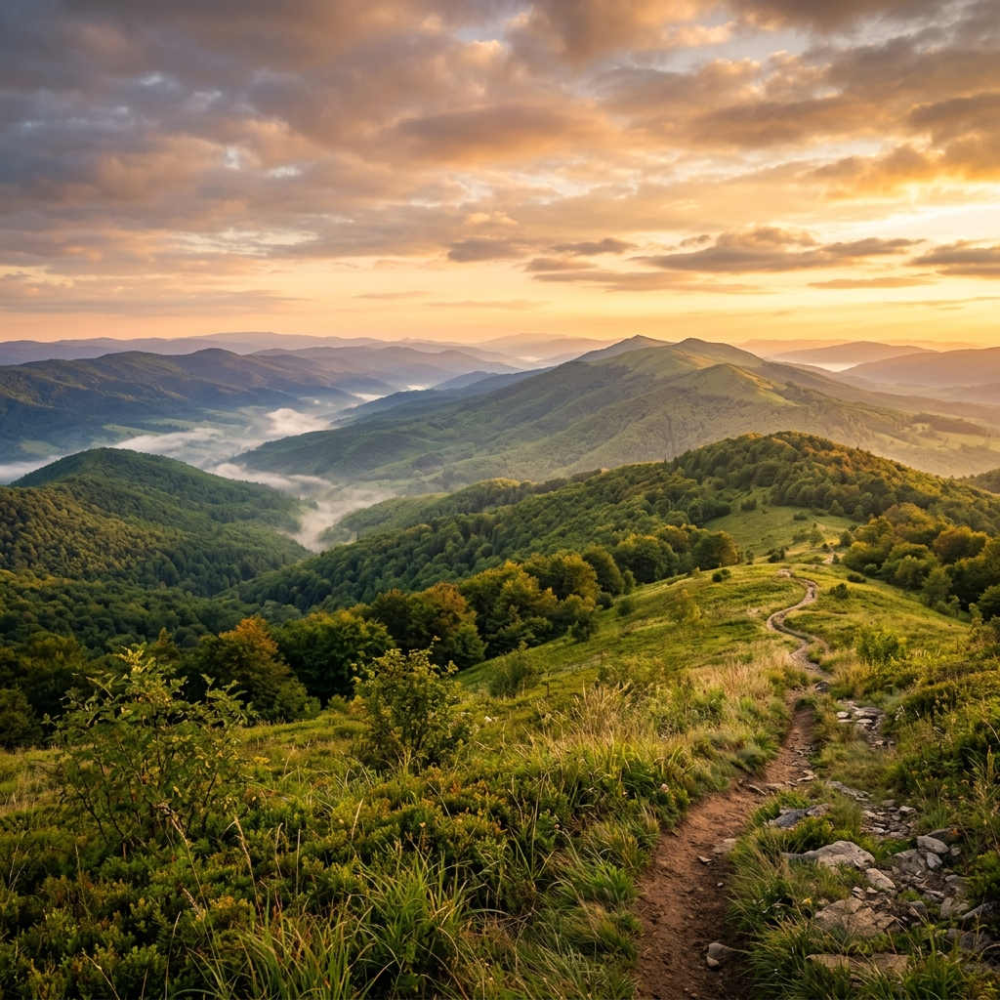
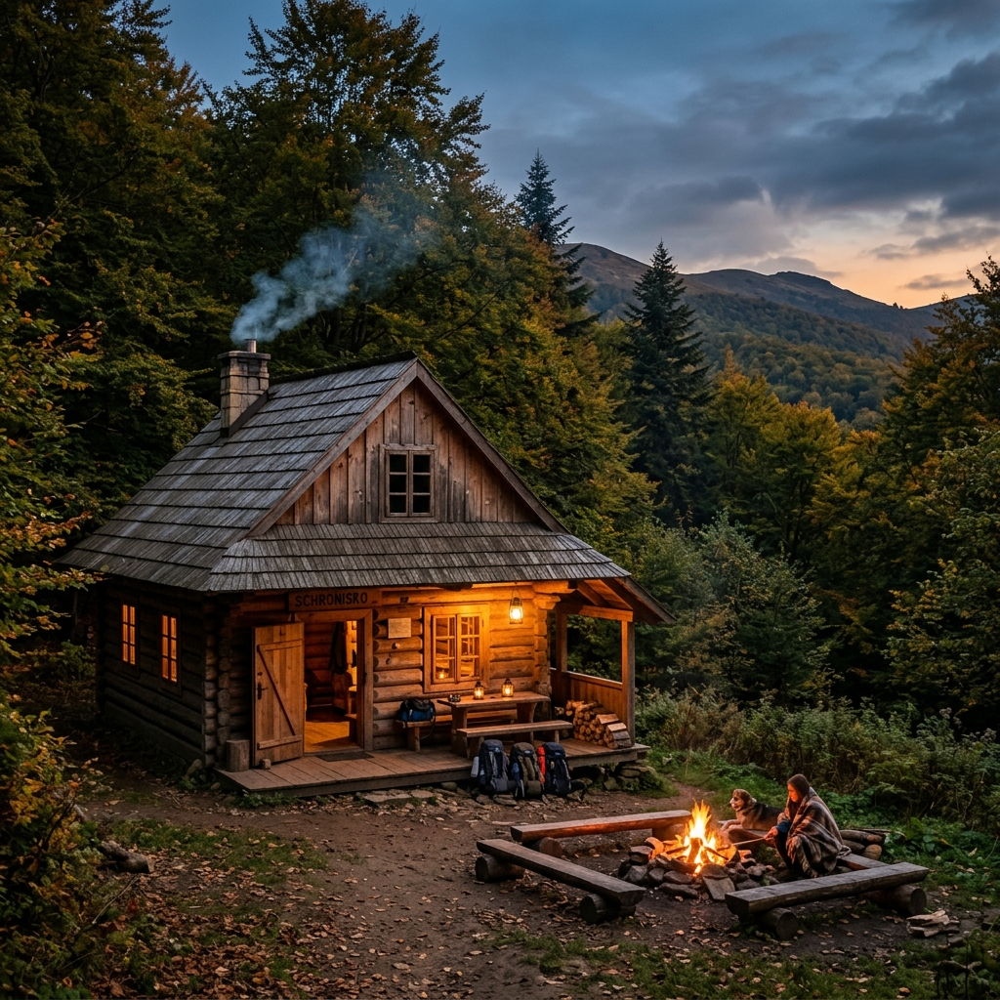
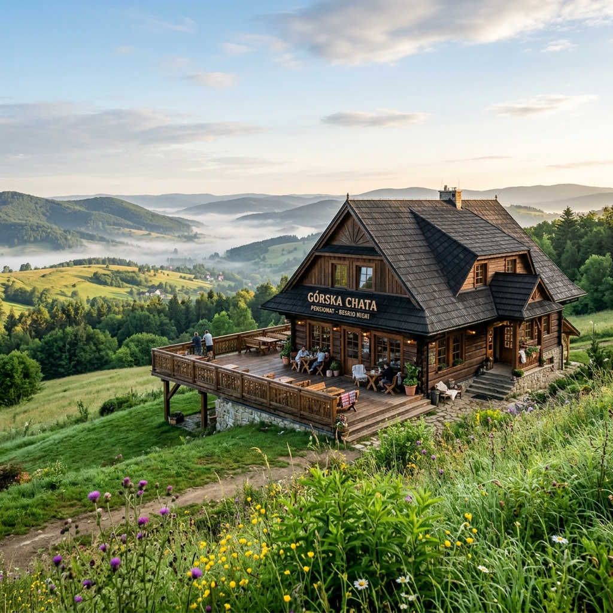
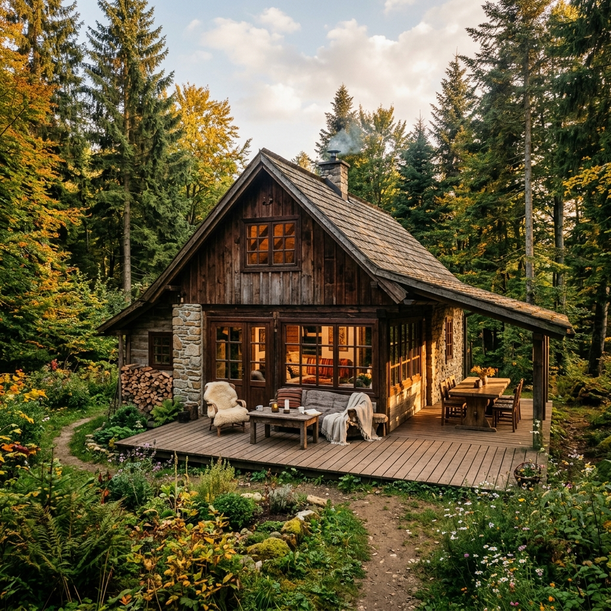
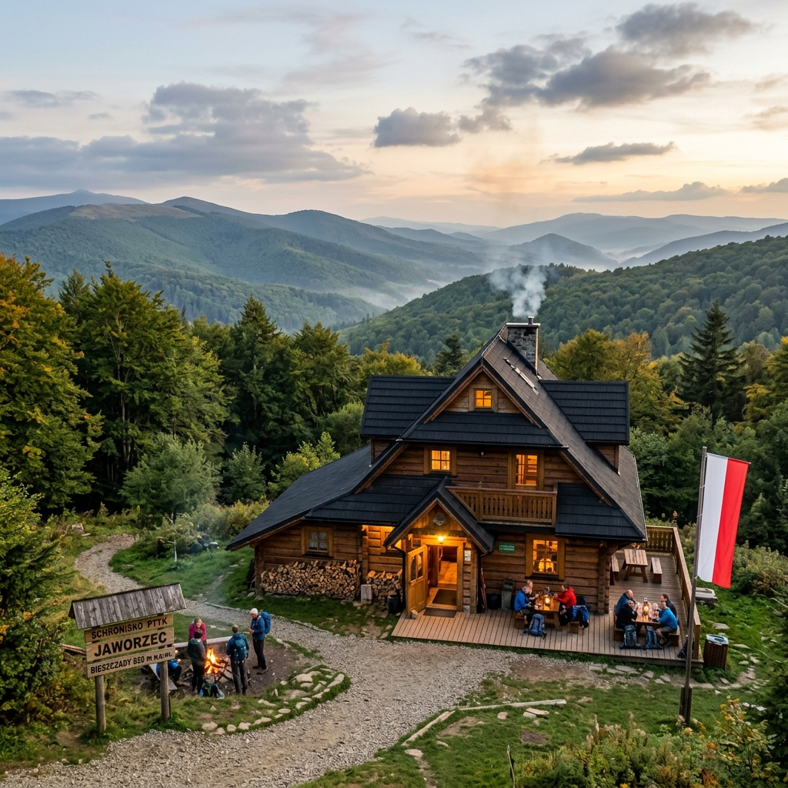
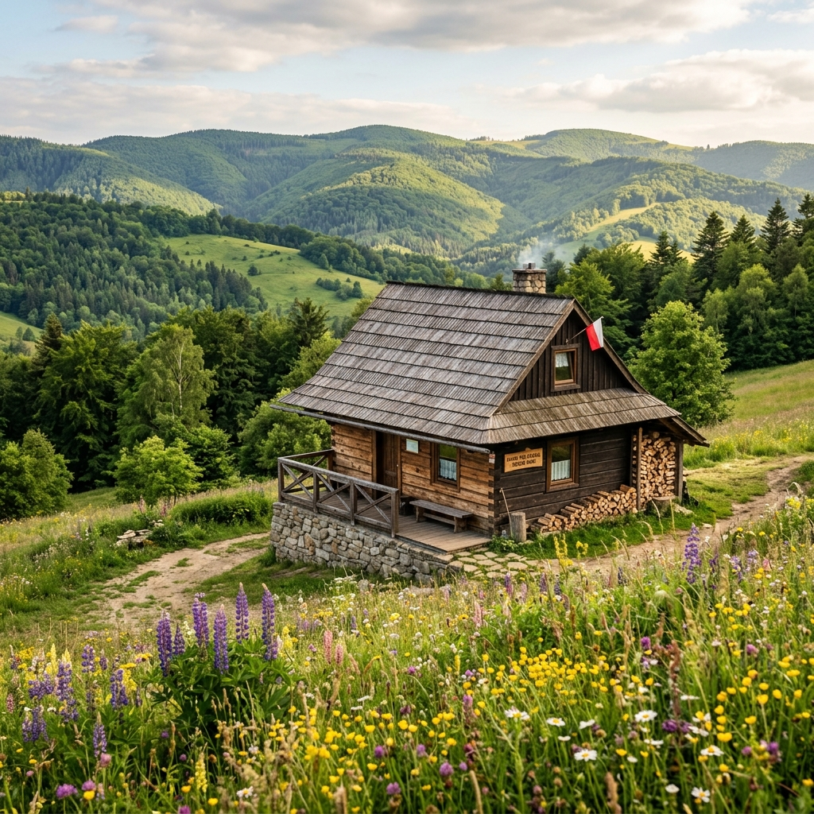
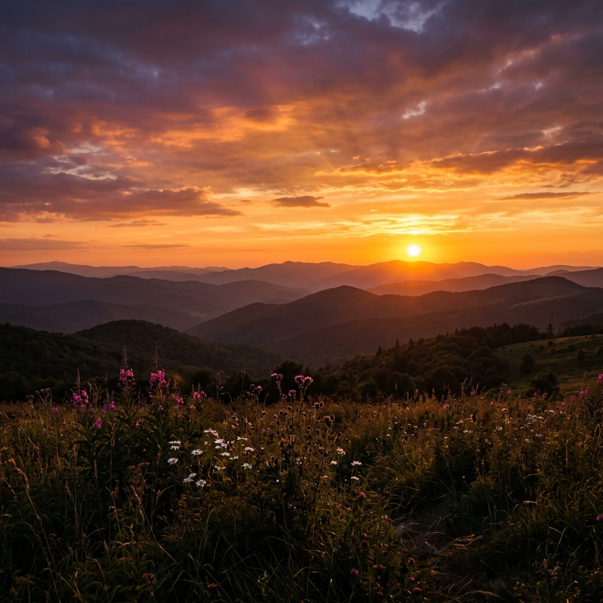
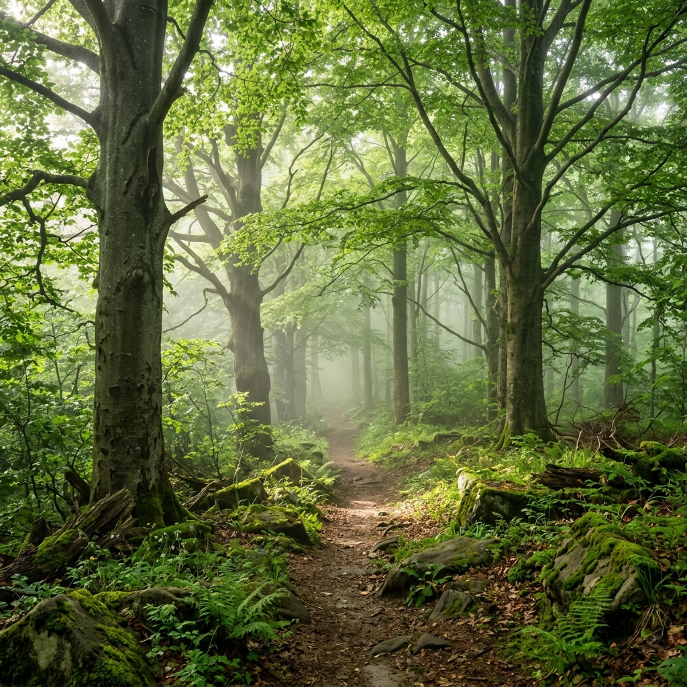
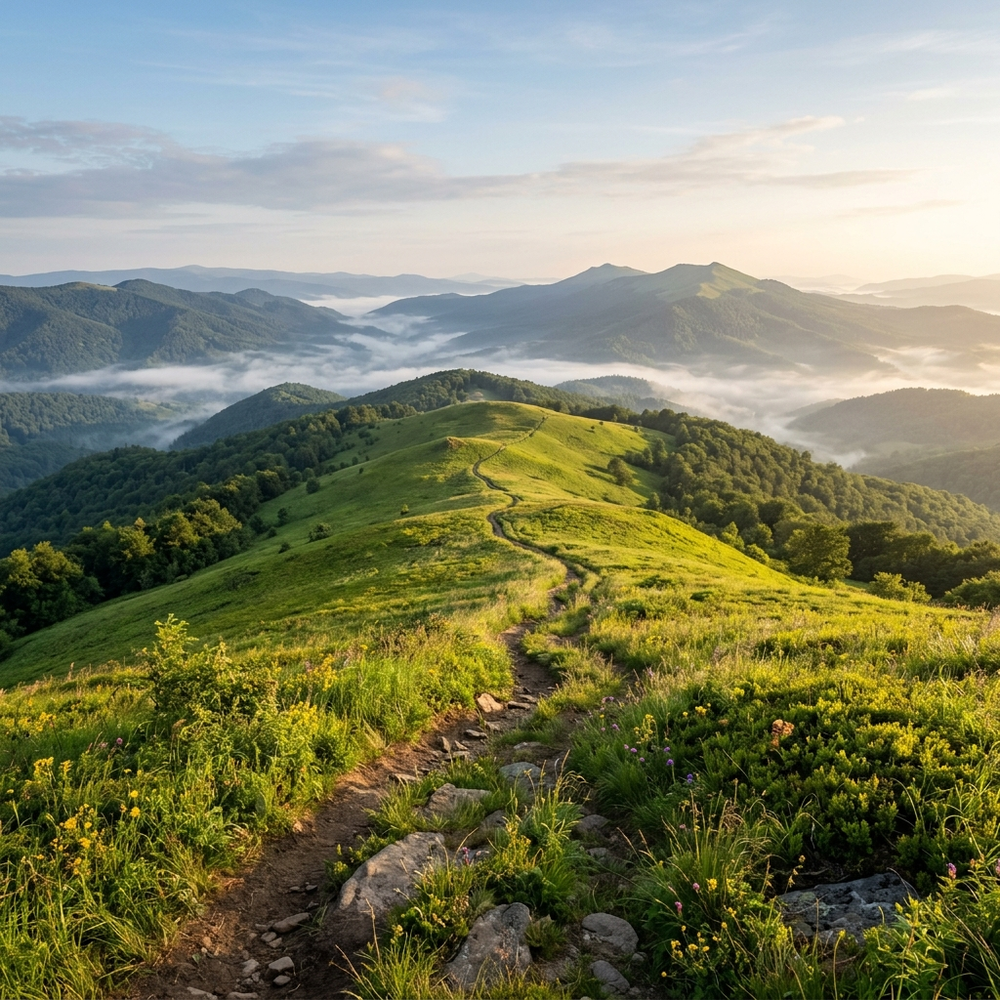
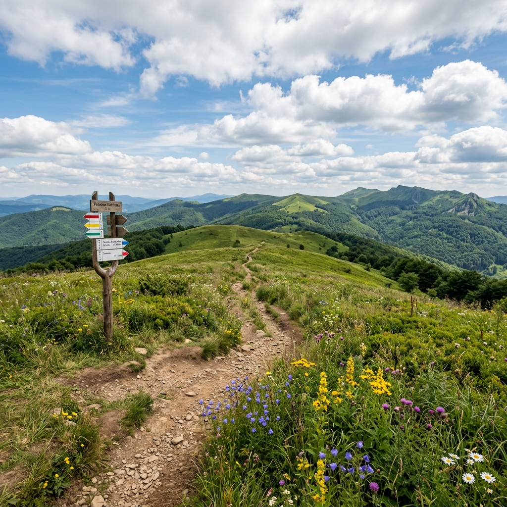

Sieć 5 schronisk z transportem bagażu, pełnym wyżywieniem i gwarancją ciszy. Zostawiasz ciężki plecak — zabierasz wspomnienia.
W Lekkim Szlaku ciężkie są tylko wspomnienia — plecak zostaw nam.
Transport bagażu między obiektami jest wliczony. Idziesz z lekkim plecakiem dziennym — resztę dostarczymy na miejsce.
Śniadanie w obiekcie startowym, lunch-box na szlak i ciepła kolacja na mecie. Zero stresu z jedzeniem.
Brak off-roadu, głośnych imprez, nocnych hałasów. Święty spokój — dla tych, którzy szukają prawdziwego odpoczynku.
Łączymy kropki na mapie Twojej wolności. 5 obiektów, 2 regiony, 0 ciężkich plecaków.
Każdy obiekt to inny świat — ale wszędzie czeka na Ciebie ciepłe łóżko, domowe jedzenie i cisza.

Beskid Niski„Chata na końcu świata" — klimatyczne miejsce u podnóża Beskidu Niskiego, tuż przy granicy ze Słowacją.

Beskid NiskiPensjonat z duszą — panoramiczne widoki, domowa kuchnia i punkt centralny sieci Lekkiego Szlaku.

Beskid NiskiDesignerska chata z historią — nowoczesny komfort w otoczeniu dzikiej przyrody Komańczy.

BieszczadyBrama do bieszczadzkich połonin — idealna baza wypadowa na Tarnicę i Halicz.

Beskid NiskiPrzytulne schronisko w sercu Komańczy — spokojna atmosfera i bliskość Klasztoru Sióstr Nazaretanek.
Wybierz swoją przygodę — każda trasa jest zaprojektowana tak, byś szedł na lekko.
Łupków → Smolnik → Szczerbanówka. Łagodne podejścia przez bukowe lasy, z widokami na dolinę Osławy. Idealna trasa na początek.
K85 → Schronisko Komańcza → Szczerbanówka → K85. Okrężna trasa z widokami na Chryszczatą i dolinę Wisłoka.
Pełna trasa przez wszystkie 5 obiektów sieci. Łupków → Smolnik → Szczerbanówka → K85 → Komańcza. Epicki przejazd na lekko.
Chwile, które czekają na szlaku.




Wkrótce uruchomimy cyfrowy system pieczęci. Odwiedzaj obiekty, zbieraj pieczątki, odbieraj nagrody. Bądź na bieżąco.
Zapisz się na newsletterMasz pytanie? Chcesz zaplanować wędrówkę? Napisz — odezwiemy się w ciągu 24h.
kontakt@lekki-szlak.pl
+48 000 000 000
Bieszczady & Beskid Niski, Podkarpackie